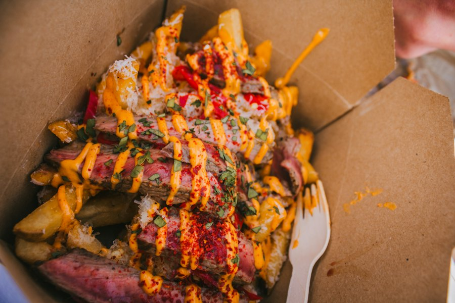
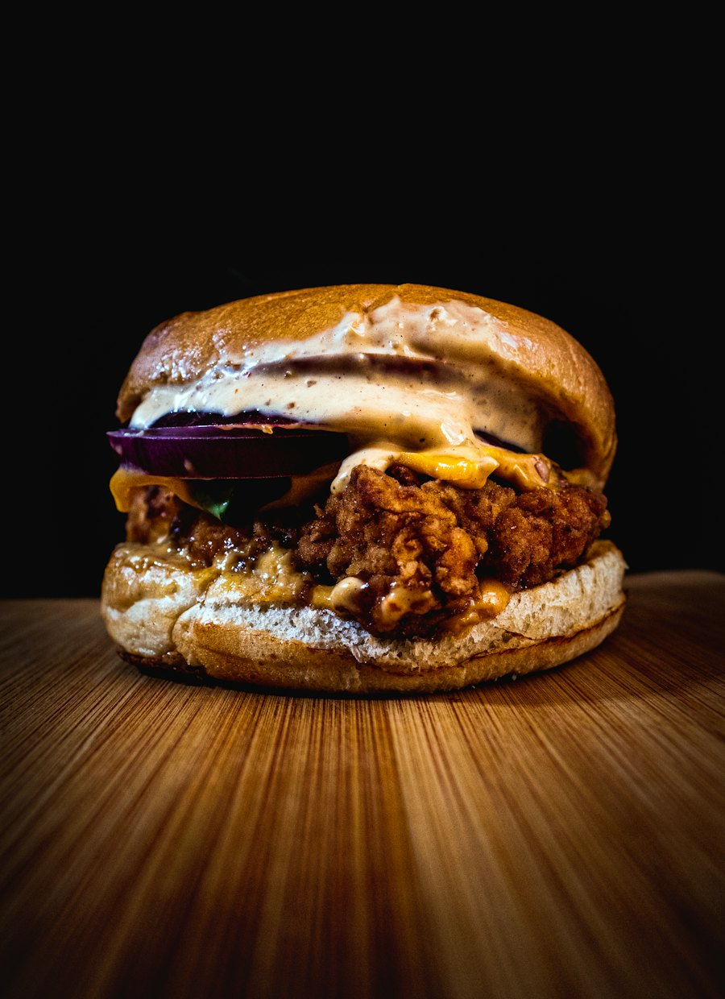

Tasty. Crousty. Chicken Bun.
Tacos, burgers, buckets et le fameux Tasty Crousty, avenue du Général de Gaulle à Thonon. Sur place, à emporter ou en livraison.
N°1le plus aimé

La signature de la maison
Le Tasty Crousty
Une barquette de frites, garnie de poulet croustillant, de sauces et d'herbes. Simple, généreux, addictif.
- OriginalFrites, poulet croustillant, sauces et herbes
- CurryPoulet croustillant sur riz, sauce curry
La carte
Faites votre choix
Tout existe en menu : avec frites et une boisson au choix.


Le spot
Le crousty de l'avenue du Général de Gaulle
Chicken Bun, c'est le rendez-vous fried chicken, burgers et tacos de Thonon, à deux pas du lycée de la Versoie. On mange sur place entre amis, ou on repart avec sa commande.
- Sur placeSalle pour manger au chaud
- À emporterAppelez, on prépare
- 10 à 20 €par personne
- Accessibleaux fauteuils roulants
Horaires & accès
Passez nous voir
| Lundi | 18h – 22h30 |
| Mardi | 18h – 22h30 |
| Mercredi | 18h – 22h30 |
| Jeudi | 11h – 14h · 18h – 22h30 |
| Vendredi | Fermé |
| Samedi | 18h – 22h30 |
| Dimanche | 18h – 22h |
- Adresse
- 51 avenue du Général de Gaulle, 74200 Thonon-les-Bains
- Téléphone
- 09 79 00 69 86